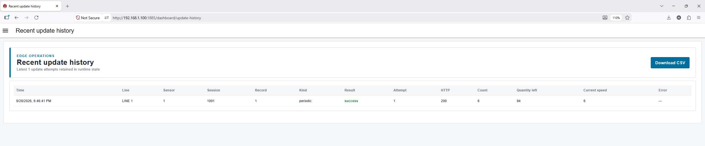
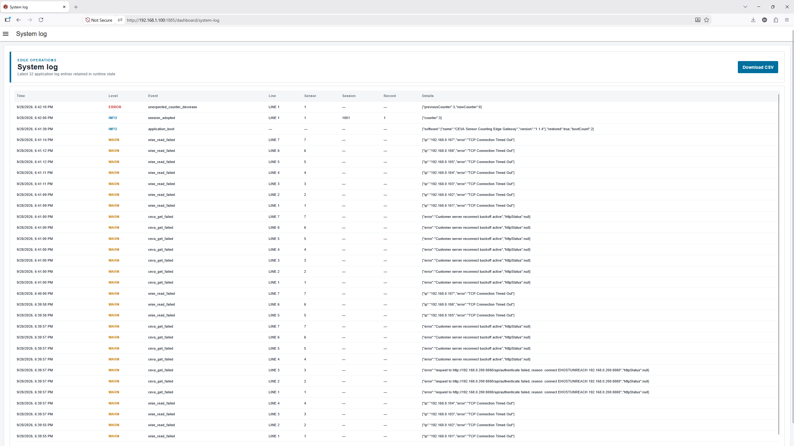

SICK · Operator Manual
Using the history and log pages
These pages help operators review what the system has done, confirm update results and export CSV files when needed.
TDC-XPhotoelectric sensor
These two pages are read-only detail pages for audit and support use. Operators can review the latest retained data and export it as CSV.
Recent update history page

What this page shows
Each row represents one update attempt retained in runtime memory.
- Time — when the update attempt happened.
- Line / Sensor / Session / Record — which production line and server record were involved.
- Kind — for example a periodic update or a final session update.
- Result — success or failure.
- Attempt — retry count for that row.
- HTTP — returned HTTP status code when available.
- Count / Quantity left / Current speed — business values sent by the gateway.
- Error — short failure description when applicable.
Use the Download CSV button to export the table.
System log page

What this page shows
-
Level —
INFO,WARNorERROR. - Event — short event code such as a read failure, session adoption or update success.
- Line / Sensor / Session / Record — useful context when the event is related to a specific line.
- Details — additional technical detail for support analysis.
Use the Download CSV button to export the log list before sharing it with SICK support.
When these pages are helpful
- To confirm that periodic updates are being sent.
- To verify whether an update failed and later succeeded.
- To capture evidence for troubleshooting or support.
- To review repeated warnings that may explain an offline line or delayed updates.